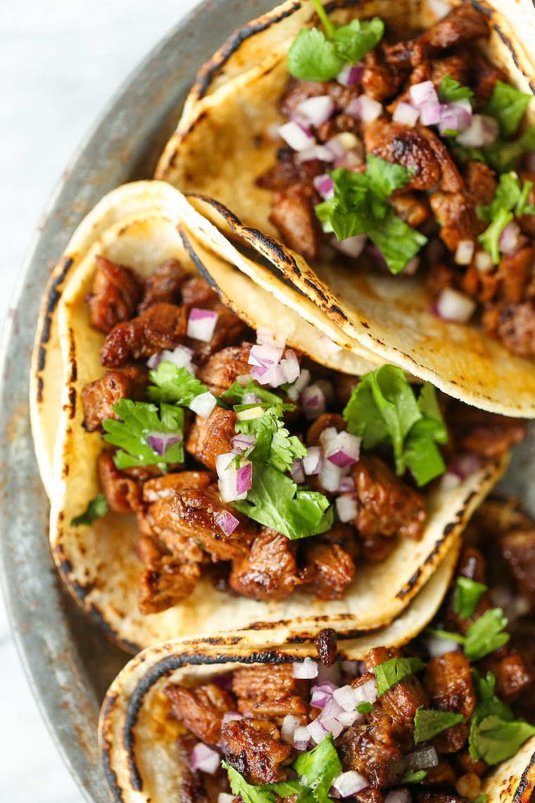

Traditional Tacos

Description
This is a delicious plate of traditional Mexican tacos. Being from Mexico,
I tend to dislike American-style tacos, and have realized that not many
Americans understand what Mexican tacos look and taste like. It's not easy
to make Mexican tacos with American ingredients, but I've prepared a
recipe the best I could. Enjoy!
Ingredients
- Corn tortilla (Try your local Mexican shop)
- Curt steak (cut into 1/2-inch pieces)
- 1 teaspoon dried oregano
- 2 tablespoons canola oil
- 3 garlic cloves, minced
- 3/4 cup dices red onion
- 1/2 cup chopped fresh cilantro leaves
- 2 teaspoons chili powder
- 1 lime, cut into wedges
Steps
-
In a medium bowl, combine soy sauce, lime juice,
1 tablespoon canola oil, garlic, chili powder,
and oregano.
-
In a gallon size Ziploc bag or large bowl,
combine soy sauce mixture and steak; marinate
for at least 1 hour up to 4 hours, turning the
bag occasionally.
-
Heat remaining 1 tablespoon canola oil in a large
skillet over medium high heat. Add steak and marinade,
and cook, stirring often, until steak has browned and
marinade has reduced, about 5-6 minutes, or until
desired doneness.
-
Serve steak in tortillas, topped with onion, cilantro
and lime.